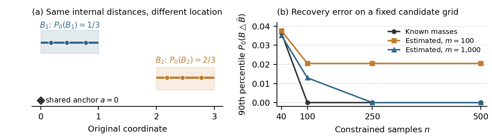

1. From relative shape to a shared space
The inverse sampling note [1] shows that pairwise distances within a constrained sample can leave its location and original mass ambiguous. This note adds shared reference points and a restricted family of possible regions, then bounds the mass recovered incorrectly.
At a fixed input, let \(P_0\) be the original law on \(\mathbb R^d\) and let \(B\) be a measurable region with \(\beta=P_0(B)>0\). As before, assume hard conditioning and \(n\geq1\) independent constrained outputs: \[Q(A)=\frac{P_0(A\cap B)}{\beta},\qquad Y_1,\ldots,Y_n\sim Q.\](1) Original samples can serve as anchors \(a_0,\ldots,a_d\). Measure the distance from every output to the same anchors, retaining their identities. This requires distances between the two datasets. The shared representation is \[\phi(y)=\bigl(\|y-a_0\|,\ldots,\|y-a_d\|\bigr).\](2)
Lemma 1 (Exact location from anchors). If the anchors are affinely independent, \(\phi\) is one-to-one. Known anchor coordinates and exact distances recover \(y\) by a linear solve.
Proof. Write \(r_j=\|y-a_j\|\). Subtracting squared distances gives, for \(j=1,\ldots,d\), \[2(a_j-a_0)^\top y =\|a_j\|^2-\|a_0\|^2+r_0^2-r_j^2.\] The \(d\) row vectors \((a_j-a_0)^\top\) are linearly independent. The system therefore has a unique solution. Identical distance vectors must correspond to the same point. ◻
Thus three noncollinear anchors suffice in the plane. The construction is a distance-reconstruction method [2]; an arbitrary metric or degenerate anchor set need not have this property. It locates observed points exactly, while unsampled parts of \(B\) still require inference. The experiment below checks this reconstruction directly in one dimension.
2. A small family of possible regions
Fix a finite family \(\mathcal H=\{C_1,\ldots,C_M\}\) of measurable regions, with \(B\in\mathcal H\). Candidates may be defined in the shared space and pulled back through \(\phi\). Fix the anchors and family before collecting the samples used below; an independent pilot sample is allowed.
3. Minimum mass gives an error bound
When candidate masses are known, retain candidates containing all constrained outputs and choose the one with least original mass: \[\widehat B\in\operatorname*{arg\,min}_{C\in\mathcal H:\,Y_i\in C\ \forall i} P_0(C).\](3) A fixed ordering resolves ties. The true \(B\) is feasible almost surely, so the search is nonempty. Under (1), the likelihood relative to \(P_0^{\otimes n}\) is \[L(C)=P_0(C)^{-n}\prod_{i=1}^n\mathbf1\{Y_i\in C\}.\] Equation (3) maximizes this likelihood. Zero-mass candidates are infeasible almost surely and can be discarded. This extends the original note’s two-interval rule and is related to minimum-volume set estimation [3].
Proposition 2 (Known original masses). For \(0<\delta<1\), with probability at least \(1-\delta\), \[\boxed{\quad P_0(B\triangle\widehat B) \leq \frac{2\beta}{n}\log\frac{M}{\delta}.\quad}\](4) Here \(B\triangle C=(B\setminus C)\cup(C\setminus B)\) counts both missed and incorrectly included original mass; \(\log\) is the natural logarithm.
Proof. For a fixed candidate \(C\), put \(q_C=Q(B\setminus C)=P_0(B\setminus C)/\beta\). Independence gives \[\Pr\{Y_i\in C\ \forall i\}=(1-q_C)^n\leq e^{-nq_C}.\] Taking a union bound over the \(M\) candidates, for every \(t>0\), \[\Pr\{\text{some feasible }C\text{ has }q_C>t\}\leq M e^{-nt}.\] Set \(t=\log(M/\delta)/n\). Except on an event of probability at most \(\delta\), every feasible candidate, including \(\widehat B\), misses at most \(\beta t\) original mass.
Write \(a=P_0(B\setminus\widehat B)\) and \(b=P_0(\widehat B\setminus B)\). Minimality and feasibility of \(B\) give \[P_0(\widehat B)=\beta-a+b\leq\beta, \qquad\text{hence }b\leq a.\] Therefore \(P_0(B\triangle\widehat B)=a+b\leq2a\leq2\beta t\), which proves (4). ◻
The two steps have distinct roles: observing every constrained output limits missed mass; minimizing original mass also limits extra mass. For a desired error \(\varepsilon>0\), it suffices that \(n\geq(2\beta/\varepsilon)\log(M/\delta)\). Replacing \(\beta\) by \(1\) gives a conservative guarantee when the true mass is unknown.
4. When the original law is available by sampling
Draw \(m\geq1\) independent outputs \(X_1,\ldots,X_m\sim P_0\), separately from the constrained and pilot samples. Replace \(P_0(C)\) in (3) by \(\widehat P_m(C)=m^{-1}\sum_{j=1}^m\mathbf1\{X_j\in C\}\), and call the result \(\widetilde B\). Original samples supply mass estimates; they do not supply membership labels for \(B\).
Proposition 3 (Estimated original masses). Under the same fixed-family assumption, with probability at least \(1-\delta\), \[\boxed{\quad P_0(B\triangle\widetilde B) \leq \frac{2\beta}{n}\log\frac{2M}{\delta} +\sqrt{\frac{2}{m}\log\frac{4M}{\delta}}.\quad}\](5)
Proof. Hoeffding’s inequality for each indicator average, followed by a union bound, gives \[\Pr\!\left\{\max_{C\in\mathcal H}|\widehat P_m(C)-P_0(C)|>\eta\right\} \leq 2M e^{-2m\eta^2}.\] Choose \(\eta=\sqrt{\log(4M/\delta)/(2m)}\), making this probability at most \(\delta/2\). On the complementary event, empirical minimality gives \[P_0(\widetilde B)\leq\widehat P_m(\widetilde B)+\eta \leq\widehat P_m(B)+\eta\leq\beta+2\eta.\] The preceding proof, with failure probability \(\delta/2\), also gives \(a=P_0(B\setminus\widetilde B)\leq\beta\log(2M/\delta)/n\) for every feasible choice, including \(\widetilde B\). Both events hold with probability at least \(1-\delta\). Writing \(b=P_0(\widetilde B\setminus B)\), the mass comparison implies \(b\leq a+2\eta\). Thus the total error is at most \(2a+2\eta\), which is (5). ◻
5. A numerical illustration
For the two-sample experiment, take \(P_0=N(0,1)\) and \(B=[-1.55,-0.45]\cup[0.55,1.35]\), so \(\beta\approx0.4684\). Each endpoint has five fixed grid values, including the truth, giving \(M=5^4=625\) candidates. Two separate known-coordinate original samples serve as anchors; the estimator receives only distances from the constrained points to those anchors. Another independent sample of size \(m\) estimates candidate masses. We use \(500\) runs for each \(n\in\{40,100,250,500\}\) and \(m\in\{100,1000,10000\}\), with \(\delta=0.05\) in the bounds.

The anchor solve had maximum coordinate error \(3.8\times10^{-15}\). At \(n=40\), median region error was about \(0.013\) in original mass; the median was zero at \(n\geq100\) on this grid. With only \(m=100\) original samples, estimated masses changed the selected region in \(663\) of \(2000\) runs across the four values of \(n\). No selection changed at \(m\geq1000\) in the other \(4000\) runs. At \(n=500\), the known-mass 90th-percentile error was zero, while the \(m=100\) estimate’s was \(0.0205\).
Neither 95% bound was exceeded in any of the \(6000\) runs. These observations are consistent with the propositions, but do not establish their coverage beyond this design. The bounds are conservative here: at \((n,m)=(500,100)\) the sampled-mass bound is \(0.484\), far above the observed 90th-percentile error of \(0.0205\). Figure 1(a) uses a separate distance-only control to show what the anchors add.
6. What the extension buys
More original samples shrink the second term; more constrained samples shrink the first. A shared representation can help if it makes a small, correct candidate family available. An invertible change of coordinates alone preserves probability error. Guessing an alignment does not resolve indistinguishable alternatives without additional information.
These are finite-family guarantees, not a claim of tighter numerical error than the original experiment. Arbitrary two-interval endpoints form an infinite family; a finite grid may exclude the true region. Misspecification, noisy anchors, or a family learned from the inference samples require additional analysis. Exact sample locations do not certify exact unseen boundaries.
References
- J. R. Landers. Can sampled distances recover a constrained region? Companion note, 2026.
- I. Dokmanić, R. Parhizkar, J. Ranieri, and M. Vetterli. Euclidean distance matrices: Essential theory, algorithms and applications. 2015.
- C. D. Scott and R. D. Nowak. Learning minimum volume sets. JMLR 7:665–704, 2006.